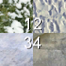

| Key | Action |
|---|---|
1 |

If in Terrain Texture mode:
Selects the terrain blend channel
or sub-channel. |
2 | |
3 | |
4 | |
[(Left square bracket) |
If in Terrain Texture mode:
Decreases brush size. |
](Right square bracket) |
If in Terrain Texture mode:
Increases brush size. |
,(Comma) |
If in Terrain Filter mode:
Selects previous filter in the list box. |
.(Period) |
If in Filter mode:
Selects next filter in the list box. |
Shift+[(Left square bracket) |
If in Terrain Texture mode:
Decreases brush strength. |
Shift+](Right square bracket) |
If in Terrain Texture mode:
Increases brush strength. |
Left Ctrl |
If in Terrain Height mode:
Activates explicit height brush. |
| Mouse left button click |
If in Terrain Texture mode:
Applies selected texture. If in Terrain Height mode:
•If Gradually increases terrain height.
•If Immediately sets terrain height to specified value.
•If Immediately increases terrain height by specified value. If in Terrain Filter mode:
Gradually applies selected filter. If in Terrain Mesh mode: •If Cut option button is selected
Cuts the terrain under the cursor. •If Repair option button is selected Repairs the terrain under the cursor. |
| Mouse left button drag | |
| Mouse middle button click |
If in Terrain Texture mode:
Picks the texture assigned to current alpha channel. If in Terrain Height mode:Gradually decreases terrain height. |
| Mouse left button drag |